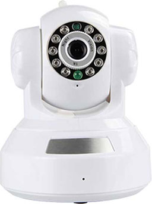

首页 > 新品发布 > S6207Y-WR
- 产品描述
- 规格参数
- 产品图集
720高清画质
百万高清镜头，高性能海思芯片
1280X720分辨率，清晰度是普通摄像头的3倍

10米红外夜视
零光源不用怕，成像一样清晰
红外校正的光学设计，自动校正红外虚焦，保证晚上图像清晰，红外灯
照射距离可达10米，配备IR-CUT，夜晚彩转黑白
移动侦测 信息推送
精准度高，误报率低。不怕贼惦记
当监控区域出现移动目标时，监控录像就会自动开启录像功能，并会
在第一时间将异常情况发送报警提示您

您可以在这些地方使用
看护宝宝
保姆一个人在家带孩子，还是有
些不放心，通过手机可随时看到
家中的情况，了解宝贝的状况。
看守家庭
24小时全天候监控，保护家庭
生命财产安全。
监护老人
通过摄像头可以与老人进行对讲
交流，知道父母的身体情况，亲
情沟通无障碍。
看管店铺
出门在外，晚上回家，如有小偷
光顾，立即将报警信息发送到您
的手机，可高清回放，留取证据。
- 规格参数


- 更多产品